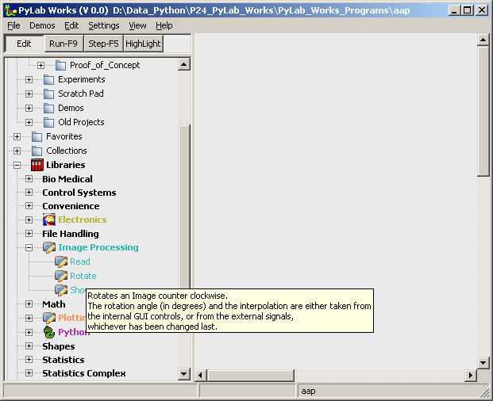

Introduction  (February 2008)
(February 2008)
Application Designer / Domain Expert / Control Designer / Core Developer
What is PyLab_Works
What is PyLab_Works, we can give a few short answers from some different perspectives:
Technical speaking:
PyLab_Works is a highly modular Visual Development Environment, based on data-flow programming technics.
Or in more human language:
PyLab_Works is an easy development environment, based on the domain knowledge of experts. So the user doesn't need any programming knowledge nor does the user need to be an expert on that particular domain.
And we can give many more long answers, but it might be better to start with a simple example. The figure below shows a simple functional block diagram of PyLab_Works, showing that PyLab_Works is in fact nothing more than a user-friendly wrapper for well-established libraries, like NumPy and MatPlotLib. The Graphical Controls and Displays are an integral part of PyLab_Works, while the domain expert should only create new Bricks, which are just simple connectors between the Graphical Controls and the domain functionality already available in the libraries.
Documentation
The documentation is written during code writing, and therefor might not always be completely correct, or sometimes there are features in the documentation that are intended to implement but are not yet implemented. The code is quit hierarchical, as shown in the schematic below. At the top of each document, there's an indication for which group of users this document is written.
Simple Example
So suppose I want to make a program that can rotate an image, not very meaningful, because there are a lot of programs that can rotate an image, but I've chosen this example because it doesn't expect any specific domain knowledge. This is not a full explanation of PyLab_Works, but here I just want to show what steps are to be performed to make a real working application. So let's start PyLab_Works, and search for the image library in the tree. Open the node of the image library and look for something like "rotate". When we move the mouse cursor over the "rotate", we get an experts explanation of what this function will do for us. And indeed it does exactly what we need.

Now simply drag the rotate-node to the design area on the right and drop it there, and the first brick will appear. I can investigate the brick, by placing the mouse cursor on the brick, and again the domain expert will tell me (in my own language) what the brick will do. I can move my mouse cursor on the inputs and outputs (the tiny squares and circles) and again the domain expert will tell me what this input/output is supposed to do and in case of an input if it's required or not (which is also indicated by a small extra line at the required node).

You can see that you need to connect some kind of "signal" to the top-left input, and the signal is of the type image, which seems quit reasonable for a function that rotates an image. The input on the top-right is not required, so I can leave that input open. And as the brick image-rotate only rotates an image, it might very convenient to connect some other brick to the output, something like a store-to-file or a display image. Let's look at the image library again, and we see an load-image-from-file and a display-image brick in the library. So drag these two to the design area.

And after you connect the devices (drag from one IO-port to another, only IO-ports that can accept the type of signal will highlight and are able to bind to the dragged wire), the functional design of the program is ready. Yes there might be some details to fill in, and yes we do need to design the desired graphical user interface. This functional design is a very important intermediate step, because it shows exactly what we mean at this abstraction level. Try to tell someone what the above application will do and compare that sentence with the diagram above. You might be missing the word "Image" in each of the above bricks, but that is implicitly indicated by the green color (which can be altered by the user of the library).
So up to the next step, press on the "Run-F9" button and the base of the general application is generated, watch ...
... and now you should have the real program, because changing the slider will change the image rotation directly. So in in fact our Application is ready, we just have to fine-tune some details.
As you might notice, each brick is translated in a separate panel with a number of controls. The panels are separated by dragable splitters. These controls allows the final user of our application to change every parameters of that brick. The panels can be dragged and dropped to the desired position and size. Placing a panel outside the main window, will remove the controls (not the brick, and not the functionality) from the final application, so only preventing the end-user to change the according parameters.
In the picture above you can see an another important feature of easy programming, in rotating an image new pixels will be generated, for which the color must be determined by some kind of calculation. The domain expert therefore has added a control "interpolation" that will let us choose from different possibilities (in better rotation algorithms there will even be more chooses). We even don't have to understand all this talking about interpolation, but as fully non-domain-expert we can simply try and see what it does, see the figure below.
Above is our final application, we've shuffled the panels to a bit more logical position and fixed the application (removed the drag possibility of the panels and splitters).
Basic Ideas
The basic idea of this program was born when I had to study the possibilities of using LabView as the new standard tool (instead of MatLab) for medical research on our university. After seeing some life demos, I became very enthusiast, which vanished completely when I started implementing some real stuff. Visual programming, like in LabView did have something very interesting, but I had the feeling that the implementation was somewhere completely wrong. It took several months, before I saw the light. After I knew what was important, I read a lot of articles about visual programming, but couldn't confirm all of my own ideas. There has been a lot of study on the use and benefit of visual programming environments, both by researchers with a background in psychology and researchers with a background in information theory. Many of them compared the speed of development in normal program languages and in visual program languages, and found an increased productivity (at least in the beginning), but I never saw a good comparison, i.e. a double blind setup and/or the right audience for the right tool. The explanations why visual design is better, varies a lot and is often in expressed in terms, not understandable by normal human beings. So after seeing the light, I just started developing PyLab_Works based on some common sense starting-points. The most important issues in my opinion are:
Key-Features
Advantages of PyLab_Works
Disadvantages of PyLab_Works
MainMenu
|
File |
Demos |
Edit |
Settings |
Windows |
Help |
|
+ New / Open ^O - Save ^S - Save As ... ------------- - Print ^P - Print Preview - Page Setup ----------------- - Export ---------------- + Close |
-dynamic list of all demo programs |
-ToDo |
-ToDo |
-ToDo |
- PyLab Works - Python ------------------- - Check New Version + Send BugReport - Ask OnLine Assistance + About |
New / Open
Closes the existing file and opens a new or existing file. If another project is opened, the current project will be saved automatically.
Close
Closes the application, all changes are saved automatically.
Send BugReport
Starts the default email client, with the recipient directed to "Punthoofd", the bug directory of PyLab_Works.
About (text aanpassen !!)
Shows the about box, containing a short description, version number and credits.